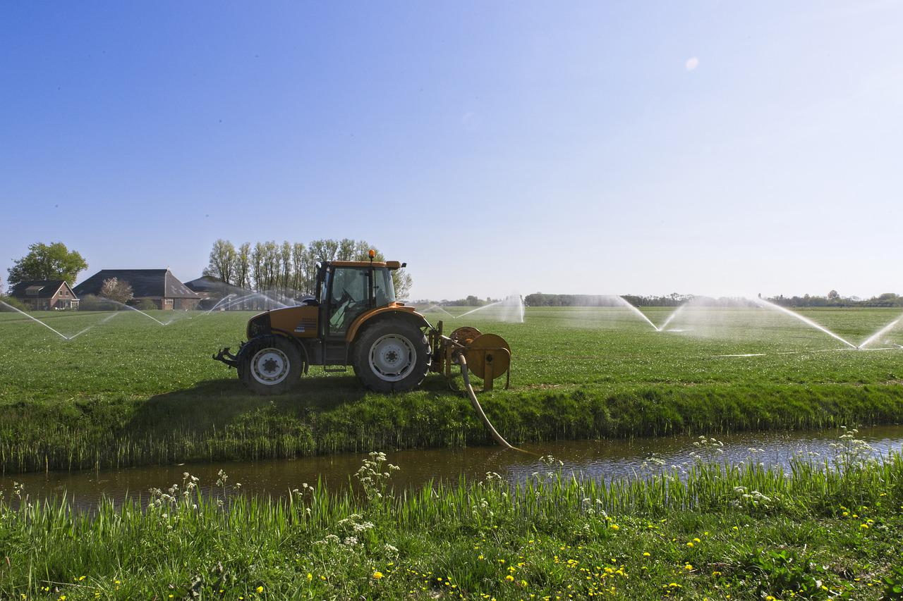
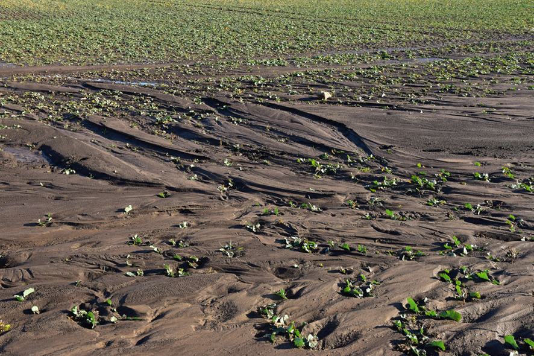
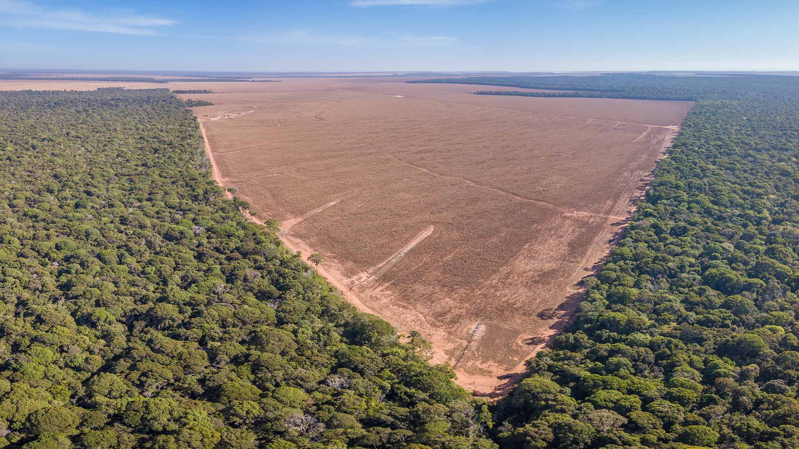

O impacto da agricultura no meio ambiente

Quais são os principais impactos da agricultura ao meio ambiente
A atividade agrícola por causar diversos impactos ao meio ambiente, é a atividade que mais consome água, a que mais causa poluição por nitrato nas fontes de águas superficiais e subterrâneas, além de contribuir para o desmatamento e poluição do ar, erosão e consequente assoreamento de rios e lagos, perda de biodiversidade. Em contrapartida, segundo Bittencourt (2009) “tanto a agricultura como a exploração florestal têm sido vistas como importantes no que diz respeito a algumas externalidades positivas nas questões ambientais, tais como armazenamento e purificação da água, sequestro de carbono, e a manutenção das paisagens rurais”.
• Poluição do ar:
A agricultura pode afetar a qualidade do ar de quatro formas:
A) Produção de CO2 por queimadas;
B) Metano proveniente da produção de arroz e pecuária;
C) Óxido nitroso devido ao uso de fertilizantes e esterco;
D) Amônia oriunda de esterco e urina de animais (BITTENCOURT, 2009).
Além disso, a queima de biomassa para limpeza do solo para plantio emite diversas substâncias poluentes para a atmosfera.
Prática muito comum na agricultura tropical, pois estimula o desenvolvimento de forragens para os rebanhos e limpa o terreno para novos
plantios.

• Poluição das águas:
O uso da água na agricultura é alto, segundo Rodrigues & Irias (2004) a agricultura utiliza 70% da água captada de rios ou aquíferos,
e para agricultura irrigada essa água é preciso ter uma qualidade ainda melhor e ainda destacam que a maior parte da água utilizada para
irrigação não retornam para o manancial de origem! Os autores salientam que “em relação à necessidade de uso de água, pode-se diferenciar
os países em quatro categorias de perspectivas agrícolas, segundo três componentes de desenvolvimento (recursos, tecnologia, e meio ambiente):
A) Baixo potencial de produtividade/alto potencial de terras (exemplo os EUA);
B) Alto potencial de produtividade/alto potencial de terras (exemplo o Brasil);
C) Alto potencial de produtividade/baixo potencial de terras (exemplo Índia);
D) Baixo potencial de produtividade/baixo potencial de terras (exemplo a Europa Ocidental).

• Erosão do solo:
A erosão hidráulica é um processo que impacta muito as terras para plantio, devido a remoção da cobertura vegetal e a intensa exploração do solo as gotas de chuva ou mesmo a irrigação podem causar erosão, danificando as plantações e gerando inundações que retiram nutrientes importantes da terra, como o fósforo e o potássio (ESTADÃO, 2020). Eduardo Mansur (FAO) disse que “a erosão acabou se tornando a principal ameaça ao solo saudável em nosso planeta e é extremamente importante buscar novas soluções que contemplem os melhores métodos de manejo da terra para minimizá-la (ESTADÃO, 2020). A erosão também contribui para o assoreamento e a eutrofização.

• Desmatamento:
A agricultura impacta a cobertura da vegetação nativa, pois é preciso desmatar (em grande parte, embora haja outras soluções) para produção, principalmente quando se trata de uma agricultura em grande escala. Segundo dados publicados pela CNN BRASIL (2022) o Brasil, em 2021, ' liderou o ranking de país que mais devastou áreas florestais, perdeu aproximadamente 1,5 milhão de hectares de bioma nativo. “Impactos ambientais, mudanças climáticas, escassez de água, tudo consequência do desflorestamento em busca de expansão agrária” (GIZMODO BRASIL, 2021). Sendo, as principais causas do desmatamento estão associadas à expansão agrícola, que aumentou 9% em 2021, quando comparado com o ano anterior (CNN BRASIL, 2022).

Como amenizar ou solucionar o problema?
• Práticas Sustentáveis na Agricultura:
Usar sistemas de irrigação que causem menos danos e sejam mais sustentáveis (exemplo irrigação por gotejamento), programar e monitorar a irrigação.
• Energia renovável:
Maximizar a eficiência energética e abandonar os combustíveis fósseis são importantes para redução dos impactos ambientais, em especial a emissão de gases poluentes e prejudiciais ao efeito estufa.
• Cultura de cobertura:
plantadas para proteger o solo, além de reduzir as ervas daninhas, aumentam a fertilidade do solo e a matéria orgânica e ajudam a prevenir a erosão e compactação.
• Fertilização orgânica:
Uso de fertilizantes organominerais, insumos produzidos a partir da compostagem da matéria orgânica e acrescidos com uma fração de nutrientes minerais. Promovem melhorias nas características físicas, químicas e biológicas do solo sem causar nenhum dano ambiental.
• Tratamento de resíduos:
O tratamento e descarte correto dos resíduos ajudarão a prevenir a contaminação do solo, poluição da água ou transmissão de doenças.